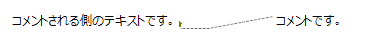
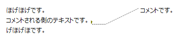

コメントを追加する
コメントはテキスト内の特定の位置と他のテキストを線で結ぶ機能です。

テキストをつなぐ線を「コメント線」と呼びます。 コメント線はテキストとテキスト内の「アンカー文字」()を結びます。
テキストを編集してアンカー文字の位置が変わった場合， Ctrl+Enterを押したり，テキストの外をクリックして編集を確定したタイミングでコメント線の経路が自動で修正されます。

コメントを追加するための操作を以下に示します。
キャレット位置にコメントを追加する
キャレット位置にコメントを追加するには以下の操作を行います。
- テキストを編集状態にします。
- 書式ツールバーの「コメントを追加」をクリックするか「Ctrl+Shift+@」キーを押します。
- キャレットがあった位置に「アンカー文字」が挿入，「アンカー文字」に接続された「コメント線」が追加，「コメント線」につながったテキストが追加されます。
コメント線を追加する
既存のテキストをコメント線でつなぐには以下の操作を行います。
- メインツールバーの「図形を追加」>「コメント線」を選択します。
- コメント側のテキスト上でマウスの左ボタンを押してドラッグを開始します。
- コメントされる側のテキスト上のコメント線をつなげたい位置までマウスをドラッグして左ボタンを離します。